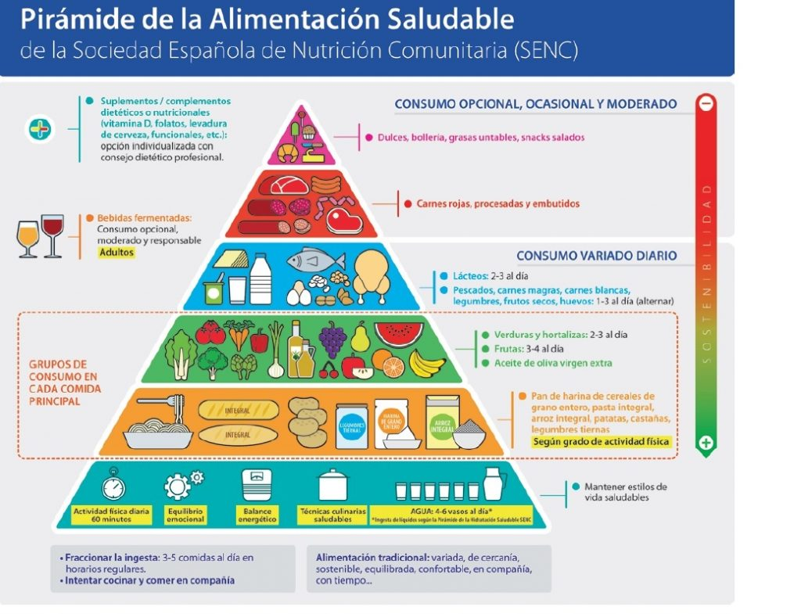

La alimentación es la acción y efecto de alimentar o alimentarse, es decir, es un proceso mediante al cual los seres vivos consumen diferentes tipos de alimentos para obtener de estos los nutrientes necesarios para sobrevivir y realizar todas las actividades necesarias del día a día.
Otro concepto importante para la alimentación es la nutrición que consiste en el proceso mediante el cual, luego de la alimentación, el organismo busca los nutrientes en los alimentos consumidos para transformarlos en energía para sobrevivir y subsistir, en cambio, alimentación se refiere al proceso de consumir los alimentos que luego proveerán de nutrientes al organismo. No deben confundirse ambos conceptos.
La alimentación balanceada, conocida como alimentación completa o saludable, es aquella que contiene un alimento de cada grupo alimenticio y es ingerido en porciones adecuadas de acuerdo al peso, talla, sexo.
Los grupos alimenticios están clasificados en 5 categorías: carbohidratos, proteínas, lácteos, frutas y vegetales y, por último grasas y azúcares. Los grupos alimenticios suelen estar representados en la pirámide nutricional o pirámide alimenticia como lo veremos presente en la siguiente imagen: 
La Alimentación es necesaria en todos los seres vivos, tanto en los animales como en los Seres Humanos, y es por ello que debemos tener una equilibrada incorporación de nutrientes a nuestro organismo, lo que muchas veces es referenciado como Buena Alimentación, siendo fundamental su cumplimiento para el desarrollo de la vida y de las distintas actividades cotidianas.Teniendo una alimentación balanceada podemos encontrar un bienestar fisico, mental y emocional. Entre algunos beneficios tenemos: